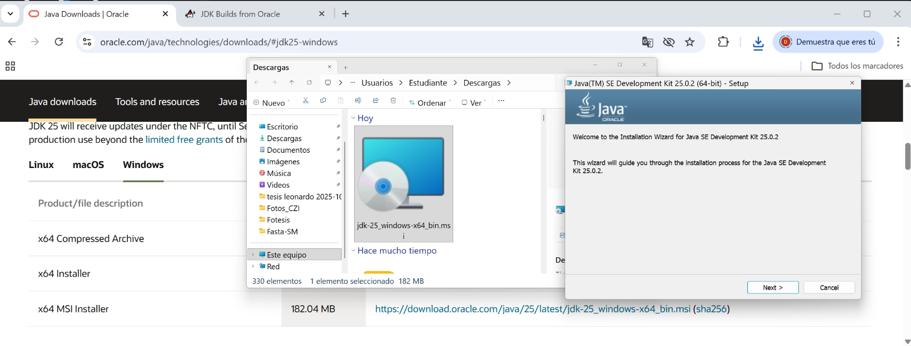
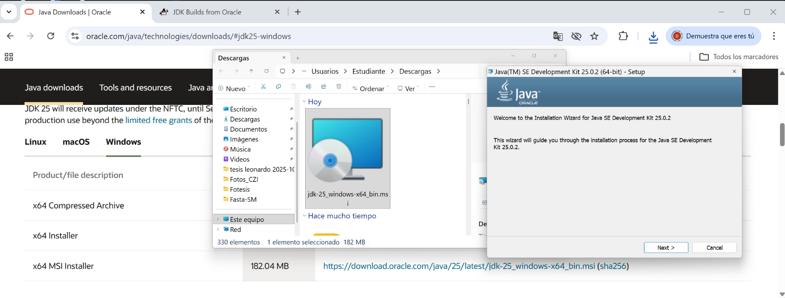
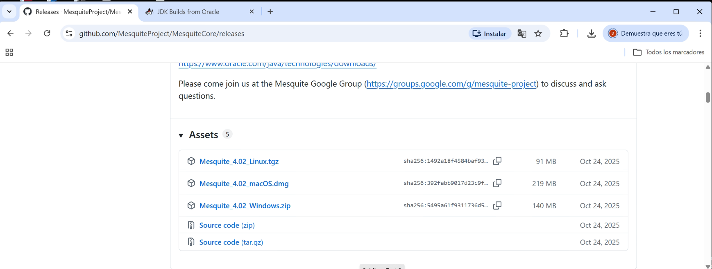
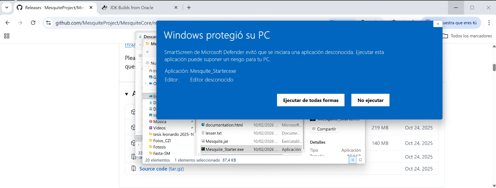
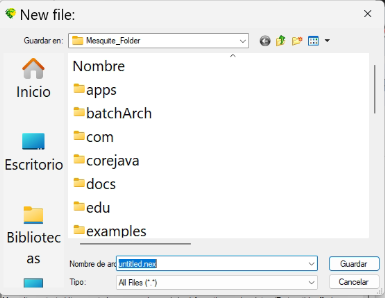
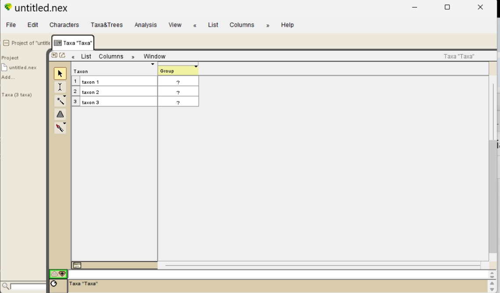

Fundamentación Teórica y Ontología
Una matriz filogenética no es una simple hoja de cálculo; es un modelo formal de nuestras hipótesis sobre la evolución. Según Wiley & Lieberman (2011), la construcción de la matriz es el paso más crítico del análisis filogenético. Un algoritmo de parsimonia o bayesiano puede procesar cualquier dato, pero si la definición ontológica del carácter ("qué es") es errónea, obtendremos un árbol matemáticamente óptimo pero biológicamente falso.
1.1. De la Observación a la Homología
No todo atributo observable es útil para la sistemática. Wiley & Lieberman (2011, p. 104) distinguen entre:
- Rasgo (Trait): Cualquier atributo observable de un organismo (ej. "ojo azul").
- Carácter Filogenético: Una hipótesis de homología que representa una "parte cuasi-independiente del organismo" que ha sido modificada heritablemente.
Antes de incluir una columna en su matriz, pregúntese si la estructura cumple con los criterios de homología primaria:
- Posición Topológica: ¿La estructura está en el mismo lugar relativo a otras estructuras? (ej. el húmero siempre conecta con la escápula).
- Calidad Especial: ¿Comparte detalles estructurales finos o complejidad única?
- Conexión de Intermedios: ¿Existen formas fósiles o estados de desarrollo que conecten dos formas dispares?
1.2. Filosofía de la Codificación: El Dilema de lo "Inaplicable"
El desafío más común en morfología es codificar atributos de estructuras que no existen en todos los taxones (ej. "Color de la cola" en una rana sin cola).
| Estrategia | Ejemplo de Codificación | Implicación Ontológica y Matemática |
|---|---|---|
|
Codificación Compuesta (Composite Coding) NO RECOMENDADA |
Un solo carácter multiestado: 0 = Sin Cola 1 = Cola Roja 2 = Cola Azul |
El Error: Trata la "Ausencia" como un estado homólogo al "Color".
Si el carácter se analiza como Ordenado (0↔1↔2), el software asume que para evolucionar de Roja a Azul, la especie debe perder la cola y volverla a ganar (pasos extra absurdos). |
|
Codificación Reductiva (Reductive Coding) RECOMENDADA |
Dos caracteres independientes: C1 (Presencia): 0=Ausente, 1=Presente C2 (Color): - = Inaplicable, 0=Roja, 1=Azul |
La Solución: Descompone la complejidad.
El símbolo - le dice a la matriz: "No penalices cambios de color en organismos que no tienen el sustrato biológico para tener color".
|
Fase 0: Instalación Técnica del Entorno
Mesquite corre sobre la Máquina Virtual de Java. Siga estos pasos estrictamente en orden.
 

Mesquite_Starter.exe, si Windows bloquea la app, seleccione "Más información" y "Ejecutar de todas formas".


Fase 1: Atlas Funcional de la Interfaz
Mesquite no es Excel; es un entorno modular. A continuación se explica la función de cada menú visible en la interfaz, lo cual es crítico para gestionar sus datos biológicos.
1.1. Gestión de Archivos y Edición (File & Edit)
1.2. Núcleo Biológico (Characters & Taxa)
Aquí se define la ciencia. Mesquite separa "quiénes son" (Taxa) de "cómo son" (Characters).
1.3. Análisis y Gestión de Datos
¿Dónde está el Manual?
Mesquite no usa un PDF estático. Para entender los algoritmos:
- Vaya al menú Help.
- Seleccione Mesquite Documentation.
Nota: Esto abrirá su navegador web (Chrome/Firefox). Mesquite crea un servidor local offline con toda la documentación interactiva.
Fase 2: Construcción de la Matriz (Paso a Paso)
Una vez configurado el entorno, procedemos a digitalizar la información biológica. Siga estos pasos con precisión utilizando los datos de los Caminalcules.
Nombre su archivo:
Lab2_Caminalcules.nex.
Este será su archivo principal donde trabajaremos la Matriz Rigurosa. 
-
Name of Taxa Block: Escriba
Caminalcules. -
Number of Taxa: Escriba
6.
(Esto corresponde al Fósil 73 + Especies 1, 2, 3, 4, 12). - ☑ Make Character Matrix: ¡MARQUE ESTA CASILLA!
Escriba: 6
(Esto creará las 6 columnas necesarias para la Matriz Rigurosa).
1.
Fosil_73 (Outgroup)
2.
Esp_1
3.
Esp_2
4.
Esp_3
5.
Esp_4
6.
Esp_12

1. Vaya a Matrix > Edit Character Names.
2. Escriba los siguientes nombres en orden:
- 1. Dedos_Presencia
- 2. Forma_Basal (No-Dedo)
- 3. Parches_Grandes
- 4. Punteado_Fondo
- 5. Ojos_Tallo
- 6. Ojos_Posicion
2. Anotaciones: Si tiene dudas sobre un carácter, active Matrix > Show Annotations Panel y use el cuadro de texto inferior para escribir sus notas (ej. "Estado difícil de ver en la imagen").
Fase 3: El Experimento con Caminalcules
Material de Trabajo
Para este ejercicio utilizaremos los organismos ficticios de Sokal (1983). Debe identificar y codificar los siguientes taxones en las láminas suministradas:
Fósil 73
Ancestro hipotético para enraizar el árbol. Note sus aletas simples y patrón de puntos.
Ubique en esta lámina las especies: 1, 2, 3, 4 y 12.
Queremos probar cómo el mal tratamiento de los ceros (ausencias) afecta la topología.
Hipótesis: La Matriz Ingenua agrupará a las especies por lo que "no tienen", en lugar de por sus estructuras compartidas (sinapomorfías).
Instrucciones del Reto: 2 Matrices, 2 Resultados
Debido a la irregularidad de las manchas en algunas especies, usaremos caracteres visuales más claros. Construya dos archivos NEXUS (Riguroso.nex y Ingenuo.nex) codificando:
| Rasgo Biológico | Variación Observada (Codificación Sugerida) |
|---|---|
| 1. Apéndices (Dedos) |
Este rasgo es clave. Observe las extremidades anteriores: - Aletas: (Fósil 73) - Tentáculos: (Especie 1) - Dedos/Garras: (Especies 2, 3, 4, 12) |
| 2. Tipo de Pigmentación |
En lugar de forma geométrica, mire la cobertura: - Punteado/Poros: Puntos pequeños dispersos (Fósil 73, Especie 1) - Parches Sólidos: Grandes bloques negros (Especies 2, 3, 4, 12) |
| 3. Estructura Ocular |
- Ojos Sésiles: Pegados a la cabeza (73, 2, 3, 4, 12) - Ojos Pedunculados: Salen en un tallo (Especie 1) |
Use la lógica de Independencia. Separe la existencia de la forma usando datos inaplicables (-).
[Pigmentación] C3: Parches_Grandes (0=No, 1=Sí) | C4: Punteado_Fondo (-=Inap, 0=Ausente, 1=Presente)
[Ojos] C5: Ojos_Tallo (0=No, 1=Sí) | C6: Ojos_Posicion (0=Lateral, 1=Dorsal)
*Nota Conceptual Importante: El código 0 en "Dedos_Presencia" no significa que el organismo no tenga brazos. Significa que el estado derivado ("Dedos") está ausente, aunque tenga otra estructura ancestral (Aleta o Tentáculo).
Use la lógica de Serie de Transformación Forzada. Cometa el error de meter todo en una sola columna lineal.
C2: Pigmentación (0=Ausente, 1=Punteado, 2=Parches)
C3: Ojos (0=Ausente, 1=Sésiles, 2=Pedunculados)
Importante: En el menú List of Characters, marque estos caracteres como ORDERED. Esto forzará al software a creer que para tener "Dedos" (2), evolutivamente se debió pasar por tener "Tentáculos" (1), lo cual es biológicamente falso.
Fase 4: Análisis y Visualización (Sin TNT)
Para resolver las preguntas del laboratorio, necesitamos visualizar la topología y mapear los caracteres. Aunque en el Lab 3 usaremos TNT para búsquedas rigurosas, Mesquite tiene un motor heurístico interno suficiente para este ejercicio.
Se le pedirá configurar la búsqueda. Seleccione en orden:
- Method: Tree Search.
- Source of Characters: Stored Matrices.
- Criterion: Parsimony Criteria > Treelength.
1. Vaya al menú (dentro de esa ventana) Analysis > Trace Character History.
2. Seleccione Parsimony Ancestral States.
3. Use las flechas azules de la interfaz para navegar entre sus caracteres (Pigmentación, Ojos, etc.).
Interpretación: Las ramas se pintarán de colores.
- Un cambio de color en un nodo indica una Sinapomorfía.
- Un color que aparece independientemente en dos ramas separadas indica Homoplasia.
Instrucciones para la Entrega del Informe
⚠️ Modalidad: Taller In-Situ
Este laboratorio funciona bajo la modalidad de entrega inmediata. El objetivo es fomentar la discusión en tiempo real y la capacidad de síntesis teórica.
- 👥 Trabajo Grupal: Máximo 3 estudiantes por informe.
- ⏱️ Plazo Límite: Carga en Moodle antes de finalizar la sesión (4 horas).
- 📄 Formato: PDF único titulado
Apellido1_Apellido2_Lab2_Caminalcules.pdf.
Contenido Requerido: Análisis Filogenético
El informe debe contener las respuestas desarrolladas y justificadas a los siguientes 4 puntos de análisis crítico, basados en la evidencia generada en Mesquite:
1. Evidencia de Matrices (Data)
Incluya capturas de pantalla legibles de la Matriz Ingenua y la Matriz Rigurosa. Debe resaltar visualmente (con círculos o flechas) la diferencia en el tratamiento de los ceros (0) y los inaplicables (-).
2. Comparación Topológica (Trees)
Presente los dos cladogramas resultantes (Árbol Ingenuo vs. Árbol Riguroso) generados en la Fase 4.
Pregunta: ¿Son congruentes las topologías? ¿Qué clados monofiléticos se mantienen y cuáles se rompen al cambiar la codificación?
3. Mapeo y Terminología Cladística (Interpretation)
Sobre el Árbol Riguroso, mapee el carácter "Parches_Grandes" e indique:
- ¿El estado "Presente" se comporta como una Sinapomorfía del clado (2+3+4+12)? Justifique basándose en la optimización del nodo ancestral.
- Identifique en el árbol si existe algún caso de Homoplasia (convergencia o reversión).
4. Reflexión Teórica (The "Zero" Problem)
En el Árbol Ingenuo, observe cómo se agrupan las especies que tienen códigos bajos (ceros y unos).
Pregunta Crítica: ¿El agrupamiento forzado de especies dispares (como la 1 y la 73) se debe a parentesco real o a un "artefacto metodológico" por usar series ordenadas incorrectas?
✅ Lista de Cotejo (Checklist)
Asegúrese de responder todas las secciones antes de enviar:
⬜ Captura Matriz Ingenua
⬜ Captura Matriz Rigurosa
⬜ Árbol Ingenuo vs Riguroso
⬜ Análisis de Congruencia
⬜ Sinapomorfías identificadas
⬜ Homoplasias señaladas
⬜ Discusión sobre el "Cero"
⬜ Argumento Ontológico
Rúbrica de Evaluación Rápida
| Criterio | Descripción del Desempeño Esperado |
|---|---|
| Completitud (20%) | Presenta los 4 puntos solicitados. Si faltan capturas de pantalla o un árbol, la nota máxima será 4.0. |
| Rigor Terminológico (40%) | Utiliza correctamente términos como Sinapomorfía, Parafilia, Homoplasia, Plesiomorfía. No usa lenguaje coloquial ("más evolucionado", "parecido"). |
| Argumentación (40%) | Las respuestas explican el efecto metodológico de la codificación. No se limita a describir el árbol ("A está con B"), sino que explica por qué el algoritmo los agrupó así (tratamiento de inaplicables vs. ceros). |